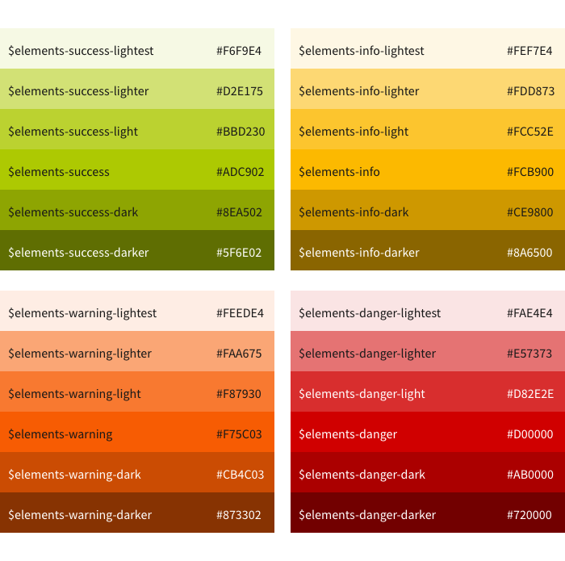

Color
Color plays an essential role in the design of user interfaces. By using color, the design becomes vivid and versatile.
Color can set emphasis and create hierarchy. Meanwhile, color is powerful in expressing emotions and setting tone. Color also establishes associations and has a strong cultural relevance.
The color palette contains primary, grayscale and semantic colors which work harmoniously with the branding color of every product from the CONTACT product family. It is hence designed to communicate the corporate values and principles from CONTACT.
It is recommended to use color in a meaningful and intentional way, rather than according to personal preferences or merely aesthetics. The key is to create the design in a way that it provides structure and improves efficiency in user’s wayfinding.
The usage of color shall be kept consistent within the user interface so that the visual patterns can be recognized again. We suggest learning the proper use of colors from the standard components examples Components.
Primary Color
The primary color establishes the connection between the corporate identity and the user interface. It results in a holistic experience throughout the products from CONTACT.
The primary color should be used most widely across the interface. You can choose from the various shades and apply them contextually.
Typically, the primary color is used to visualize the clickable elements, such as hyperlinks, buttons, tags, etc.
It can also be used to highlight essential information and brings structure to plain content, such as titles, selected items, etc.
It is also used to style the confirmation button in the messaging context.
It can also be used for providing feedback of actions, such as the background color of a hovered tab in the tab bar does.
It can also be used in conjunction with typography to emphasize headlines or titles.
The visual indication of primary colors helps users to navigate and find the interactive elements quickly. It moreover reinforces the structure of information and functions in the user interface. It also provides a substantial basis for the look and feel throughout all Elements applications.
Warning
The use of color in iconography should be treated differently. Please refer to the design_system_styles_iconography chapter for details.
Grayscale Color

Due to the simplicity and flexibility of gray, we use it for presenting information and building a subtle structure in the user interface. Unlike the primary color, gray has a calming effect, which lets users concentrate on the content of the interface element. This is extremely helpful for presenting large amount of plain data because it is less irritating and stimulating.
While we encourage building contrast through colors within the user interface for a better user experience, gray remains the most used color to assist users with adequate visual cues. Meanwhile, this also fosters the primary and semantic color to pop out and catch users’ attention.
The darker shades of gray are primarily reserved for text, while the others can be used as background or border color.
The use of light gray as background for a subtle workspace, which is used to contain various interface elements.
Semantic Color

Color is a powerful tool to convey meaning and emotion. We acknowledge the different interpretations of colors among different cultures. Yet we aim for a consistent use of semantic within the products according to our definitions.
The different shades and tints of the semantic color can be used as background, border, or text color in different states (for example, disabled, hover, etc.) and different usage (e.g. iconography, messaging, feedback, interactive elements). However, if more diversity is needed, feel free to modify the opacity parameter in CSS after referring to the color variable.
The semantic colors should only be used to draw users’ attention, therefore they should be used carefully and sparingly. The use of semantic color should serve the purpose of better data visualization and clearer information architecture.
Nevertheless, you should not always only depend on color to establish differentiations visually. It may result in the loss of meanings in the colors. And users may find it confusing and overwhelming to operate the software.
Category of Semantic Colors
The semantic colors are categorized according to the different level of severity in state. That is positive, neutral, negative and critical.
- Success - positive
- Information - neutral
- Warning - negative
- Danger - critical
Usage of Semantic Colors
- The semantic behind the color suggest the consequences of the action the object results in (button, toolbar).
- It can also indicate the characteristic of the event the objects calls for (hyperlink).
- In the context of messaging and feedback, color is used to indicate the current state of the event (dialog, toast, inline notification).
- It may also provide visual hint of the common qualities of the list of choices (dropdown button).
- The use of color in action icon usually reflects the same approach, except for taking the semantic of the glyph itself into consideration and needs to be consistent with its variant of object icon.